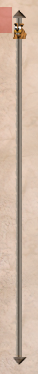
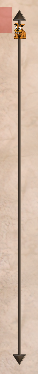
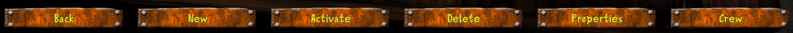
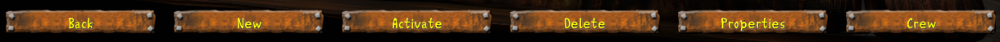

Clonk UI · visual review
The other wooden buttons and the vertical Wipf scrollbar
The captures below come from the game at 1280 × 720. Drag across the button to compare its original texture with the approved HD plank. The scrollbar section shows the original and HD rails, and lets you move the Wipf on both.
Options screen · Back
Same button bounds, sharper wood and nailheads
Actual game renders
Scenario Selection · vertical scrollbar
The approved arrow and rail art, turned upright
Actual game renders


Both images retain the same 16-pixel control width and Wipf position. The HD version samples the full 8× arrow and rail facets and the approved full-body Wipf.
Interactive · actual game atlases
Move the Wipf
Both sliders stay synchronized
Drag either Wipf, click a rail or arrow, or use the position control. The rail repeats the same facets the game draws.
Player Selection · bottom row
The same wood treatment on the other startup buttons
Actual game renders

